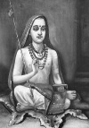

En büyük Hindu filozoflarından biri olan Adi Şankara (788-820) sadece otuz iki yaşına kadar yaşamıştır. Bununla birlikte Hindu düşüncesinin en önemli şahsiyetlerinden biri olarak kabul edilmektedir. Kısa ömrü boyunca, Hindistan’da uzun zamandır devam eden dini ayrılıkların son bulmasına katkı sağlamıştır. Dört manastır kurmuş ve Hindu teolojisi üzerinde çok büyük bir etki yaratmıştır.
Şankara, Güney Hindistan’da doğdu. Ailesi rahipler kastı olan Brahmanlar’a mensuptu. Bir kez okuduğu metinleri ezberleyebilme yeteneği ona küçük bir çocukken büyük bir ün kazandırmıştı. Yedi yaşında babasını kaybetti. On altı yaşında bir timsah saldırısına maruz kalıp ölümle burun buruna gelince din adamı olmaya karar verdi.

Şankara’nın doğduğu dönemde Hindular rakip mezheplere bölünmüşlerdi. Her biri Hinduizmin kutsal metinleri olan 3 bin yıllık Vedaları (bunlardan dört tane vardır) kendilerine göre farklı bir biçimde yorumluyordu. Bazıları ise Vedaları dahi reddetmişti. Budizmin popülerliği ve Caynizmin ortaya çıkışı da Hinduizmin güç yitirmesine neden oluyordu.
Şankara Vedalarla ilgili ilk yorumlarını henüz genç bir delikanlıyken yazdı. Günümüzde Hindistan, Nepal ve Pakistan’ı kapsayan bölgeyi yaya olarak gezdi. Yolculukları sırasında keşiş ve filozoflarla tartışmalar yaptı. Daha ziyade kırsal bölgelerde vaaz verdi. Şehirlerden uzak duruyordu. Her biri bir Veda’ya adanmış olan dört manastır kurdu. Şankara’nın ömrünün Himalayalar’da son bulduğuna inanılmaktadır.
Şankara’nın kurduğu dini gelenek, Advaita Vedanta olarak bilinmektedir. Hinduizmin içindeki en büyük gruplardan birini oluşturmaktadır. Taraftarlarına Hinduizmin altı kutsal tanrısının hepsine tapmalarını öğütlemiş, bunların yalnızca birine kendilerine adamalarının doğru olmadığını vurgulamıştı. Farklı mezhepler arasında köprü kurarak Hinduizmin canlanmasına katkı sağlamış ve rakip dinlerin yayılışının önüne bir set çekmiştir.
Ek Bilgiler
1- Efsaneye göre annesi, Tanrı Şiva’nın oğlu Şankara’nın bedeninde reenkarne olacağına işaret eden bir düş görmüştü. Şiva, Hinduizmin temel tanrılarından biridir.
2- Şankara’nın girdiği ilk teolojik tartışmalardan birisi de cinsellikten uzak duran bir keşiş olarak bu konuda hiç deneyim yaşamamış olmasına rağmen, seks ve aşk üzerine bir el kitabı olan Kama Sutra ile ilgilidir. Efsaneye göre bir şekilde yeni ölmüş bir kralın bedenine girerek bu konudaki zengin deneyimlerinden yararlanmış ve girdiği tartışmayı kazanmıştı.
3- 1983 yılında Hint yönetmen G. V. Iyer (1918-2003) filozofun hayatı ile ilgili çok beğenilen “Adi Shankaracharya” isimli bir film çekmiştir. Iyer’in çalışması 8. yy’da Hindistan’da yaygın olarak konuşulan klasik Sankritçe kullanılarak çekilen ilk film olma özelliğini taşımaktadır.